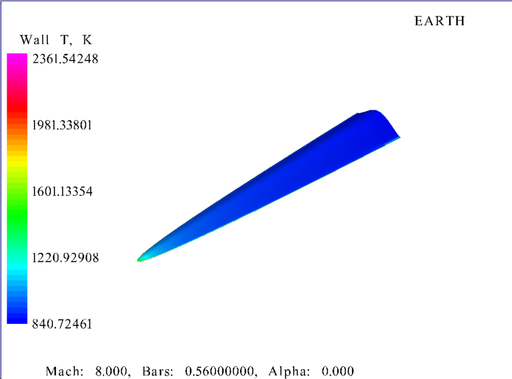
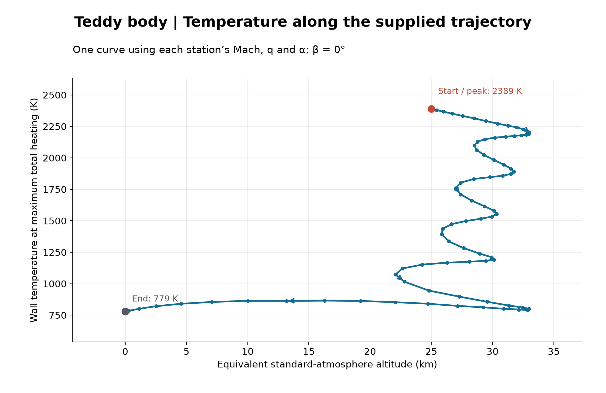
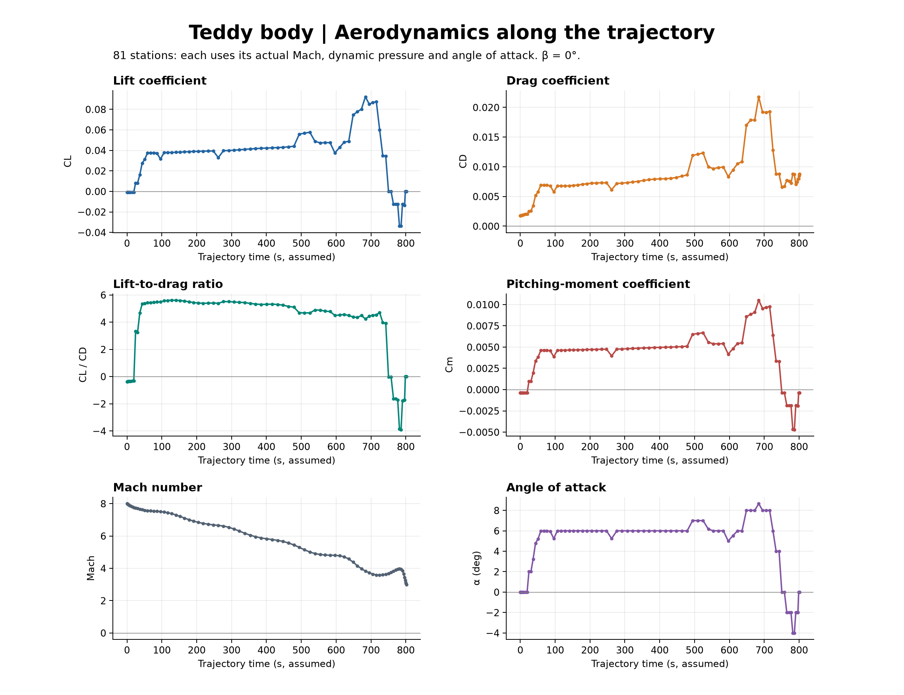
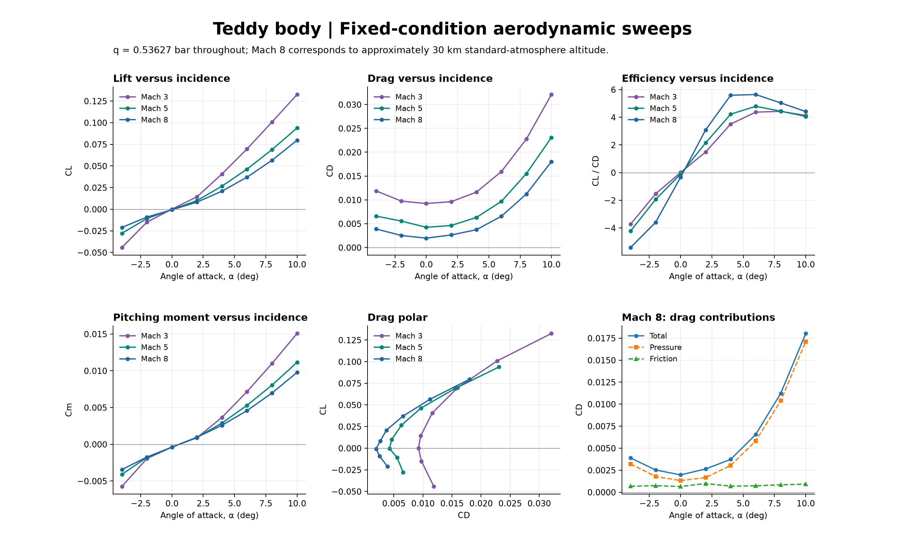
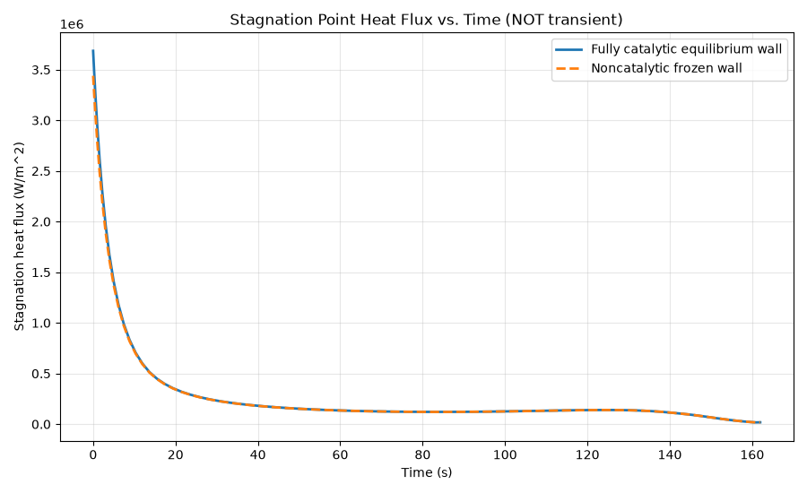
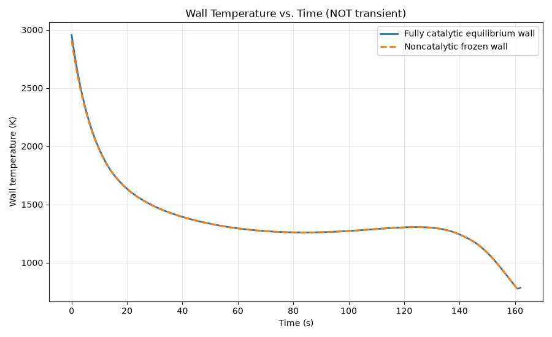

05 / AEROTHERMODYNAMICS / PYTHON
Hypersonic Vehicle Thermal Analysis
Vehicle surface temperatures, trajectory aerodynamics, and local stagnation-point heating.
VEHICLE-LEVEL ANALYSIS
Surface temperatures & trajectory aerodynamics
The expanded study adds vehicle surface-temperature visualization, temperature variation along the supplied trajectory, and aerodynamic comparisons across flight conditions. These figures complement the local stagnation-point model below.
Reading the results
The vehicle-level figures and the earlier stagnation-point plots represent separate analysis outputs and should not be treated as a single validated run. Their temperature definitions, conditions, and trajectory axes differ. The aerodynamic trajectory figure labels time as assumed; the temperature trajectory uses equivalent standard-atmosphere altitude.




LOCAL THERMAL MODEL
Stagnation-point heating
The original Python analysis compares catalytic and noncatalytic wall heating at the stagnation point.
GEOMETRY / INTERACTIVE 3D
Spaceplane forebody
Explore the supplied forebody geometry in 3D. The heat-flux results below describe a local stagnation-point model; this viewer does not show a surface-resolved heating simulation.
Loading 3D model...
The objective
Estimate stagnation-point heating along a prescribed supersonic trajectory, including the effect of wall catalysis on convective heat transfer.
The approach
For each trajectory sample, the model evaluates atmospheric conditions, solves an equilibrium normal shock, and decelerates the post-shock gas to a stagnation-edge state. A Fay–Riddell-type heat-transfer prefactor and frozen-boundary-layer enthalpy analogy are coupled to a radiative wall balance.
The outcome
The updated plots show a peak catalytic heat flux of approximately 3.7 MW/m² and a peak catalytic equilibrium wall temperature of approximately 2,960 K, estimated visually from the supplied figures. Both wall cases fall rapidly early in the trajectory, show a modest later rise, and then decline. Catalytic heating is higher near the initial peak; the curves are close over much of the remaining trajectory.
Scope & interpretation
Each sample is an instantaneous radiative-equilibrium solution, not a time-integrated material temperature. The model excludes conduction, ablation, finite-rate chemistry, and ionization. Results depend on the prescribed trajectory, nose radius, and emissivity.

